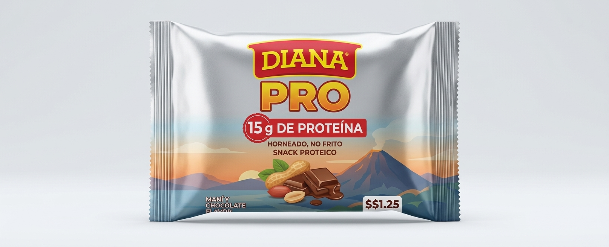
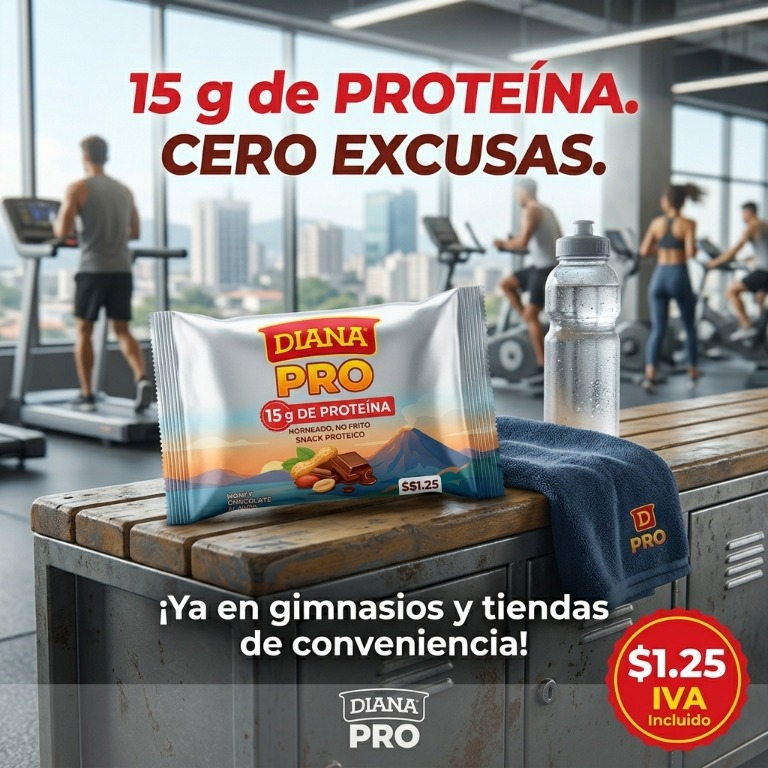

De la hoja de cálculo
a una decisión clara.
Recorre las 11 pestañas del ejercicio resuelto, con su información, casos, cálculos y respuestas.
LANZAMIENTO · SNACK PROTEICO
Diana Pro: 15 g de proteína, sabor a maní y chocolate. Horneado, no frito. Una propuesta lista para acompañar tu ritmo.

UNA IDEA QUE UNE SABOR, PROTEÍNA Y CONVENIENCIA.
Desliza para descubrir ↓Recorre las 11 pestañas del ejercicio resuelto, con su información, casos, cálculos y respuestas.
Consulta el one-pager directamente en esta página, sin salir del recorrido.
EL RETO · EJERCICIO RESUELTO
Elige una pestaña para consultar su contenido. Las tablas conservan el orden y los valores del archivo original.
Descarga el libro completo de Excel para consultarlo o trabajarlo.
LA IDEA TOMA FORMA
Una propuesta horneada, práctica y con sabor a maní y chocolate, lista para acompañar cada pausa.

La promesa: un snack proteico horneado que cabe en tu día. DIANA PRO · CERO EXCUSAS
SÍNTESIS PARA DECIDIR
El documento completo, integrado aquí para que puedas consultarlo sin abrir otra pestaña.
Consulta el documento desplazándote dentro del visor integrado.